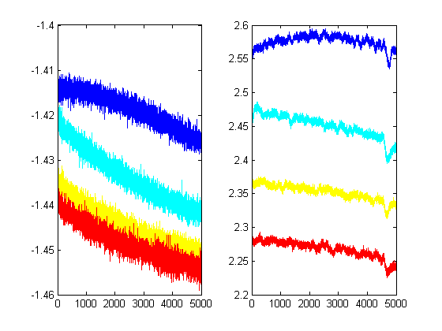
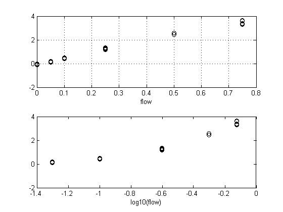

Contents
We set the PID gain to 5 and the offset to 2.78. Record MCH and octanol 6 times each. Then we want to match the absolute signal levels
%d=measureRobo(6) %save robo_20100721 d % Then again the next day. %d=measureRobo(6) %save robo_20100721 d d2 load robo_20100721 roboPlot(d)
roboPlot(d2)
Oct and MCH in the olfactometer
Vial 6 is octanol and Vial 7 is MCH We're at 0.166 odour rate
load params_100722_163945.mat
plotResponseStability(params,1)
I need a suspiciously high concentration of MCH in order to match what we saw in the t-maze. Here I have 1 ml of pure MCH at the bottom of the vial and aren't bubbling:
load params_100722_172005
plotResponseStability(params,1)
 23rd
Clean a new robo-trainer. Add in the clean air vial. Let's check it out. There are some signals from the odour vials, but they are very weak. I set the gain to x10 and get readings around 0.2 V (I zeroed it first).
Now I will put 10 ml of odour into each vial and run it again. On this run, the PID wll be right at the exit nozzle of the valves. Set gain to 5 and zero with the air vial.
load newRobo %d5=measureRobo(10); roboPlot(d5) set(get(gcf,'children'),'ylim',[0,1.5])
Repeat with the gain at 10 (The offset is at 7.70), which is where it was when we recorded this in the e-room. Oops! Half of the MCH got sucked into the water tube. Nevertheless, I will continue.
%d10=measureRobo(10);
Now add the tube
%d10=measureRobo(10); roboPlot(d10) roboPlot(dTube) ylim([0,1.5]) set(get(gcf,'children'),'ylim',[0,1.5])
Let's see what the olfactometer produces
Set second dilution to 350/5000 (0.07, 1:14.3). So if it all works out, we'd need about 0.015 at the first point to get a 1:1000. It probably won't work out that way, however! It turns out we need about 0.75 or more to get a 1V PID signal. That seems crazy because it's only about a 1:15 dilution. The first needs ~0.6 ml/min to reach a voltage of 0.5:
0.6 * 350/5350
load calibOct1
plotCalibrationCurve(C)
ans =
0.0393
That's weird. To double-check this, I will repeat under different parameters to see how the numbers add up. I will set the second dilution to be 1/6 (so 1 LPM going into 5 LPM). The first needs ~0.2 ml/min to reach a voltage of 0.5. Good! They add up!
0.2 * 1/6
load calibOct2
plotCalibrationCurve(C2)
ans =
0.0333
We can plot one against the other and check we see a straight line
clf
plotCalibrationCurve(C,C2)
stats=addFitLine;
stats.b(2) %slope
ans =
3.0323
The dilution is actually. Hmm. It's not 3. Annoying.
(1/6) / (350/5350)
ans =
2.5476
26/07/2010
We add in MCH, so that we now have MCH, octanol, and ethanol. All three have filter paper. There are 2 ml of MCH and octanol but 5 of ethanol. Deactive the first odour dilution and run conc series on these. Record at the end of the flow path. The time-courses look pretty horrible, but I'm hoping we'll be able to sort this out with the new final vales (which should arrive in 3 or 3 days). Gain is set to x10.
load calibOctMCH
odour=[C3.odour];
ethanol
plotCalibrationCurve(C3(find(odour==5)));
octanol
plotCalibrationCurve(C3(find(odour==6)));
MCH
plotCalibrationCurve(C3(find(odour==7)));
We see stange onset responses. There's a peak which drops down then rises again. I don't know why it's like that because it doesn't seem to be related to the previous odour presentation. Annoying.
Ok, we need to stick to the lower flow rates for this. So let's re-do it quickly.
load calibOctMCH1
odour=[C4.odour];
ethanol
plotCalibrationCurve(C4(find(odour==5)));
octanol
plotCalibrationCurve(C4(find(odour==6)));
subplot(2,1,1), stats=addFitLine;
regSolveForX(stats,0.8) %Approx.
ans =
0.1960
MCH
plotCalibrationCurve(C4(find(odour==7)));
subplot(2,1,1), stats=addFitLine;
regSolveForX(stats,1.05) %Approx.
ans =
0.1716
Ok, I think those numbers are good. It looks like at 0.25 ml/min I get about the correct values out from the MCH and octanol vials.
27/07/2010
Stick in a 1:1000 octanol vial in to the system to check that what I'm seeing is correct. i.e. that 1:4 dilution is what I'm looking for. (That's totally insane!).
Yes, it's insane. The following are done with only the first odour dilution in place.
load octPureAndMix
%The diluted mixture would be about 0.15 V at 100% (I only tried 0.8 here)
plotCalibrationCurve(octPureAndMix(find([octPureAndMix.odour]==5)))

The is corresponds to roughly 1:170
t=(octPureAndMix(find([octPureAndMix.odour]==6))); %get rid of the high end t=t(find([t.flow]<0.5)); plotCalibrationCurve(t) subplot(2,1,1) stats=addFitLine; regSolveForX(stats,0.15) %Approx.
ans =
0.0060
28/07/2010
%so why is the signal from the robo-trainer so large?? Measure it %again, I suppose....
%save robo_100728 robo robo2
roboPlot([robo,robo2])
This is annoying. Stuff is running down (well, either that or it's reaching it's true value or it's the PID head). The green is the air response. Let's clean it and replace the odours. Now we run it again.
%save robo_100728 robo robo2 robo3
roboPlot(robo3)
So the MCH signal is about 3.5 V and the Octanol signal is about 0.5 V This is closer to what I was recording in the e-room.
Let's put these vials into the new odour delivery system and try to calibrate that.
%calib1=concSeries(AC) %like the others, this is blocked not randomised save calibration_100728 calib1 plotCalib100728
Awesome. So 75 ml/min will do the job!